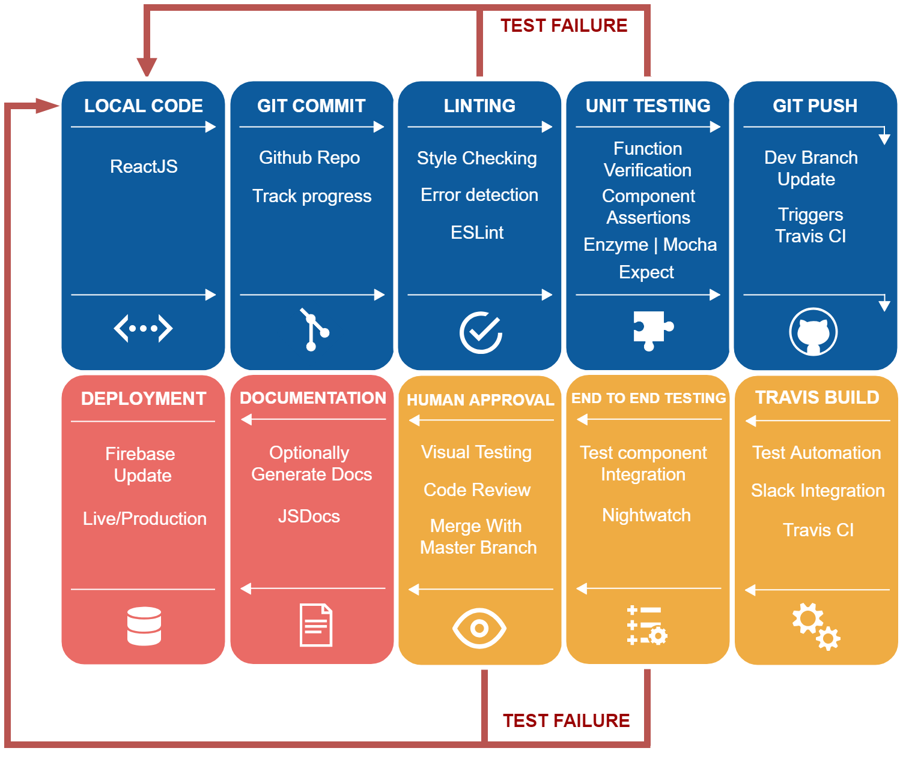

The first step is to clone the Missing Tooth Project Repository to your local machine.
Once you have found somewhere to place the repo folder, execute the following command.
git clone https://github.com/sauprankul/MissingToothTest.git
This command will copy the repository at the provided GitHub link as a folder in your current directory.
Next, switch to the devtest branch with the following command:
git checkout devtest
Since we are using NodeJS, you will need to install all the dependencies and required libraries.
npm install
Lastly, go into the githooks directory and run the install.sh script to set up the git hook.
cd githooks
./install.sh
This is the simple and robust conveyor belt that we designed. Our design decisions and reasoning can be found at ---.
This stage of our conveyor belt is for commiting changes, lint style checking, unit tests, and pushing to the devtest branch.
The build stage is for test automation, slack build notifications, the Travis build process, human approval and code review, and merging the devtest branch to the master branch.
The final stage of our conveyor belt dynamically generates documentation and deploys the changes on the master branch to Firebase.